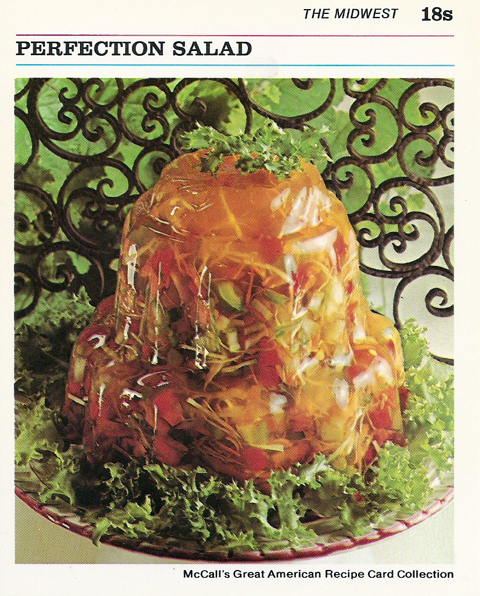

Perfection Salad

Ingredients
- 1 cup all-purpose flour
- 1 cup fresh soft bread crumbs
- 1 teaspoon each mixed spice, cinnamon, and nutmeg
- Scant cup shredded suet
- ½ cup brown sugar
- 1 dessert apple, grated
- 1 small carrot, grated
- ¾ cup chopped candied peel
- 2 eggs
- Scant cup currants
- 1⅓ cups raisins
- ¾ cup seedless white raisins
- Scant ½ cup chopped prunes or dried apricots
- 1 cup chopped, balanced almonds
- Grated ring of ½ lemon
- Juice of ½ lemon
- Grated ring of ½ orange
- 1 tablespoon corn syrup or molasses
- ⅔ cup ale, beer, or milk
Preparation
- In small saucepan, combine gelatin, sugar, and salt; mix well.
- Add 1 cup water.
Heat over low heat, stirring constantly, until sugar and gelatin are dissolved.
Remove from heat.
- Stir in apple juice, lemon juice, vinegar, and 1/4 cup cold water.
Pour into medium bowl.
Refrigerate 1 hour, or until mixture is consistency of unbeaten egg white.
- Add carrot, celery, cabbage, green pepper, and pimiento; stir until well combined.
- Turn into decorative, 1 1/2-quart mold.
Refrigerate 4 hours,or until firm.
- To unmold: Run small spatula around edge of mold; invert onto serving plate.
Place hot dishcloth over mold; shake gently to release.
Repeat, if necessary.
Lift off mold.
Refrigerate until ready to serve.
In small saucepan, combine gelatin, sugar, and salt; mix well.